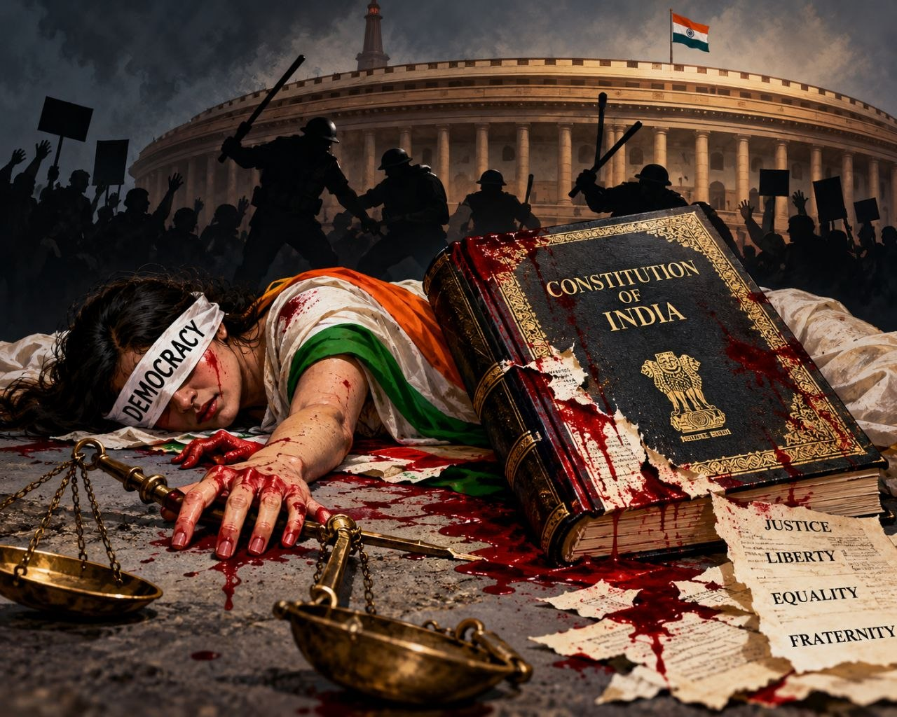

ഇന്ത്യൻ ജനാധിപത്യവും തിരഞ്ഞെടുപ്പ് കമ്മീഷനും: ചോദ്യം ചെയ്യപ്പെടുന്ന സ്വാതന്ത്ര്യം

2023 വരെ, തിരഞ്ഞെടുപ്പ് കമ്മീഷണർമാരെ നിയമിക്കാനുള്ള ശുപാർശ സുപ്രീം കോടതി ചീഫ് ജസ്റ്റിസ്, പ്രധാനമന്ത്രി, ലോക്സഭാ പ്രതിപക്ഷ നേതാവ് എന്നിവരടങ്ങുന്ന സമിതിക്കായിരുന്നു. എന്നാൽ 2023-ലെ നിയമഭേദഗതിയിലൂടെ ചീഫ് ജസ്റ്റിസിനെ ഒഴിവാക്കി, പകരം പ്രധാനമന്ത്രി നാമനിർദ്ദേശം ചെയ്യുന്ന ഒരു ക്യാബിനറ്റ് മന്ത്രിയെ ഉൾപ്പെടുത്തി. ഇപ്പോൾ സമിതിയിൽ പ്രധാനമന്ത്രി, ലോക്സഭാ പ്രതിപക്ഷ നേതാവ്, പ്രധാനമന്ത്രി നാമനിർദ്ദേശം ചെയ്യുന്ന ക്യാബിനറ്റ് മന്ത്രി എന്നിവർ ഉൾപ്പെടുന്നു.
ഇത് തിരഞ്ഞെടുപ്പ് കമ്മീഷന്റെ സ്വാതന്ത്ര്യത്തെ ദുർബലമാക്കുമെന്ന ആശങ്കയാണ് പ്രധാനമായും ഉയരുന്നത്. ഭരണകക്ഷിക്ക് സമിതിയിൽ രണ്ട് സ്ഥാനങ്ങൾ ലഭിക്കുമ്പോൾ, പ്രതിപക്ഷ നേതാവിന് ഒരു സ്ഥാനം മാത്രമേ ഉള്ളൂ. അതിനാൽ നിയമന പ്രക്രിയയിൽ കേന്ദ്ര സർക്കാരിന് നിർണായക സ്വാധീനമുണ്ടായി.
ഫയലിലെ 14 എതിർപ്പുകൾ
തിരഞ്ഞെടുപ്പ് കമ്മീഷണർമാരായ സുഖ്ബീർ സിംഗ് സന്ധുവും ഡോ. വിവേക് ജോഷിയും 10 മാസത്തിനുള്ളിൽ കുറഞ്ഞത് 14 തവണ ഫയലിൽ ഔപചാരിക എതിർപ്പ് രേഖപ്പെടുത്തിയതായി റിതിക ചോപ്രയുടെ റിപ്പോർട്ട് പറയുന്നു. പ്രത്യേകിച്ച് പ്രത്യേക തീവ്ര പുനർപരിശോധനയുമായി (SIR) ബന്ധപ്പെട്ട തീരുമാനങ്ങളിലാണ് ഇവർ വിയോജിപ്പ് രേഖപ്പെടുത്തിയത്.
ഫോം നമ്പർ 6-ൽ പുതിയ വോട്ടർമാരോട് അവരുടെ മാതാപിതാക്കളോ മുത്തശ്ശിമാരോ മുൻ എസ്ഐആർ വോട്ടർ പട്ടികയിൽ ഉണ്ടോ എന്ന് ഉറപ്പുവരുത്തണമെന്ന വ്യവസ്ഥ ചേർക്കാനുള്ള ശ്രമത്തെയാണ് ഇവർ എതിർത്തത്. ഇത്തരമൊരു മാറ്റം രജിസ്ട്രേഷൻ ഓഫ് ഇലക്ടേഴ്സ് റൂൾസ്, 1960 ഭേദഗതി ചെയ്യാതെ നടപ്പാക്കാനാവില്ലെന്ന് ജോഷി ഫയലിൽ രേഖപ്പെടുത്തിയിരുന്നു.
അതായത്, നിയമസഭയിലൂടെയോ നിയമനിർമ്മാണ നടപടിയിലൂടെയോ അല്ലാതെ, ഭരണപരമായ തീരുമാനത്തിലൂടെ വോട്ടർ രജിസ്ട്രേഷൻ നടപടിക്രമം മാറ്റാൻ ശ്രമിച്ചു എന്നതാണ് വിമർശനം. സാർവത്രിക പ്രായപൂർത്തി വോട്ടവകാശം ഉറപ്പുനൽകുന്ന ഒരു ജനാധിപത്യ രാജ്യത്ത്, പുതിയ വോട്ടർമാരുടെ രജിസ്ട്രേഷനെ അനാവശ്യമായി ബുദ്ധിമുട്ടാക്കുന്ന ഏത് നടപടിയും ജനാധിപത്യ പങ്കാളിത്തത്തെ ദുർബലമാക്കും.
ഗ്യാനേഷ് കുമാറും ചോദ്യങ്ങളും
ചീഫ് ഇലക്ഷൻ കമ്മീഷണർ ഗ്യാനേഷ് കുമാർ 1988-ലെ കേരള കേഡർ ഐഎഎസ് ഉദ്യോഗസ്ഥനാണ്. കേരള പബ്ലിക് വർക്സ് ഡിപ്പാർട്ട്മെന്റിൽ സേവനമനുഷ്ഠിച്ച കാലത്ത്, അങ്കമാലി-തിരുവനന്തപുരം എംസി റോഡ് പുനർനിർമ്മാണവുമായി ബന്ധപ്പെട്ട് മലേഷ്യൻ സിവിൽ എഞ്ചിനീയർ ലീ സീ ബീൻ്റെ ആത്മഹത്യയുമായി ബന്ധപ്പെട്ട ആരോപണം ഉയർന്നിരുന്നു.
എന്നാൽ ഈ ആരോപണം തെളിയിക്കപ്പെട്ടിട്ടില്ല. വിജിലൻസ് അന്വേഷണത്തിൽ ഗ്യാനേഷ് കുമാറെ കുറ്റക്കാരനാക്കുന്ന തെളിവ് കണ്ടെത്തിയില്ലെന്നാണ് റിപ്പോർട്ടുകൾ പറയുന്നത്. ഇപ്പോൾ കേരളത്തിലെ യു.ഡി.എഫ് സർക്കാർ ഇതുമായി ബന്ധപ്പെട്ട് പുതിയ അന്വേഷണത്തിന് ഉത്തരവിട്ടിട്ടുണ്ട്. പക്ഷേ, ഒരു ഉയർന്ന ഭരണഘടനാ സ്ഥാപനത്തിന്റെ തലവനെ സംബന്ധിച്ച പൊതുജന ആശങ്കകൾ അവഗണിക്കാനാവില്ല എന്ന വസ്തുത ശരിയാണ്.
ആർട്ടിക്കിൾ 370 റദ്ദാക്കലിലും രാമജന്മഭൂമി ട്രസ്റ്റ് രൂപീകരണത്തിലും ഗ്യാനേഷ് കുമാർക്ക് പ്രധാന പങ്കുണ്ടായിരുന്നു എന്ന് നേരത്തെ തന്നെ പലരും ചൂണ്ടിക്കാട്ടിയിരുന്നു.
ജനാധിപത്യത്തിന്റെ അടിസ്ഥാനം
ജനാധിപത്യത്തിന്റെ അടിസ്ഥാനം സ്വാതന്ത്ര്യമാണ്. ചോദ്യം ചെയ്യാനുള്ള സ്വാതന്ത്ര്യവും വിയോജിക്കാനുള്ള അവകാശവും നഷ്ടപ്പെടുമ്പോൾ, ജനാധിപത്യത്തിന്റെ ആത്മാവ് ദുർബലമാകുന്നു. ഒരു സർക്കാരിനെ വിമർശിക്കാനും അതിന്റെ നയങ്ങളെ ചോദ്യം ചെയ്യാനും തെരുവിൽ സമാധാനപരമായി പ്രതിഷേധിക്കാനുമുള്ള അവകാശം ജനാധിപത്യത്തിന്റെ ജീവവായു ആണ്; അതാണ് ഇന്ന് വെന്റിലേറ്ററിൽ ആയിരിക്കുന്നത്.
പ്രതിഷേധത്തെ അടിച്ചമർത്താൻ എത്ര ശ്രമിച്ചാലും, ജനങ്ങളുടെ അവകാശബോധം അണച്ചുകൊല്ലാനാവില്ല. ഇന്ന് അടിച്ചമർത്തപ്പെടുന്ന ഓരോ ശബ്ദവും നാളെ കൂടുതൽ ശക്തമായി ഉയരും. ജനാധിപത്യം കൊലചെയ്യപ്പെടുമ്പോൾ, അതിനെ സംരക്ഷിക്കാൻ രംഗത്തിറങ്ങുന്നവരുടെ ധൈര്യമാണ് ഭാവിയിലെ ജനാധിപത്യത്തിന്റെ പ്രതീക്ഷ.
"വരൂ, കാണൂ... രക്തം കാണൂ, ഈ തെരുവിലെ രക്തം കാണൂ!" അത് ഇന്ത്യൻ ജനാധിപത്യം കൊലചെയ്യപ്പെടുമ്പോൾ അതിൽ നിന്നൊഴുകുന്നതാണ്. തെരുവുകളിൽ നിന്ന് ഉയരുന്ന ശബ്ദം കാണൂ; അത് ജനാധിപത്യം കൊലചെയ്യപ്പെടുമ്പോൾ അതിനെ സംരക്ഷിക്കാൻ ചിന്തിക്കുന്ന ജനതയുടെ ചോരയാണ്. അതിനെ എത്ര അടിച്ചമർത്തിയാലും, അത് ഇനിയും കൂടുതൽ ശക്തമാവുകയേയുള്ളൂ.